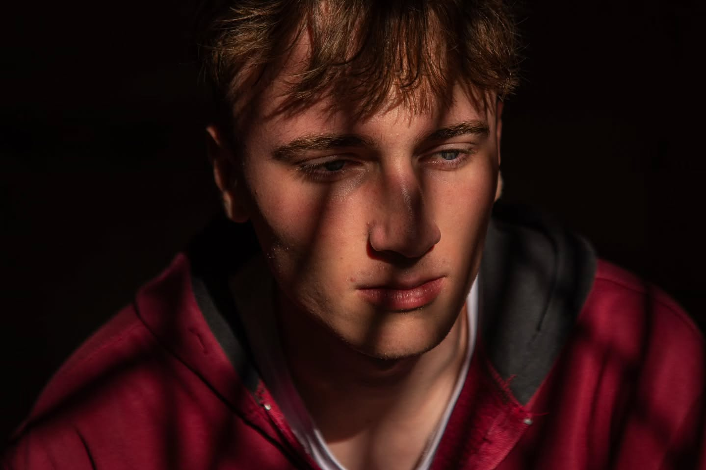
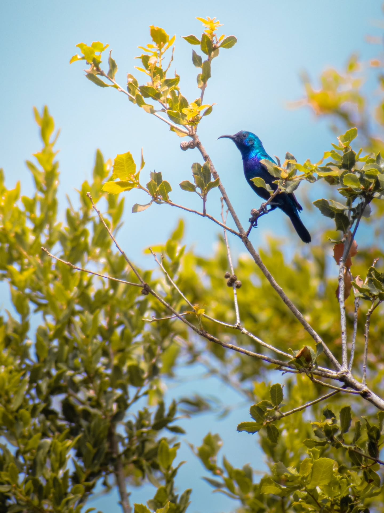
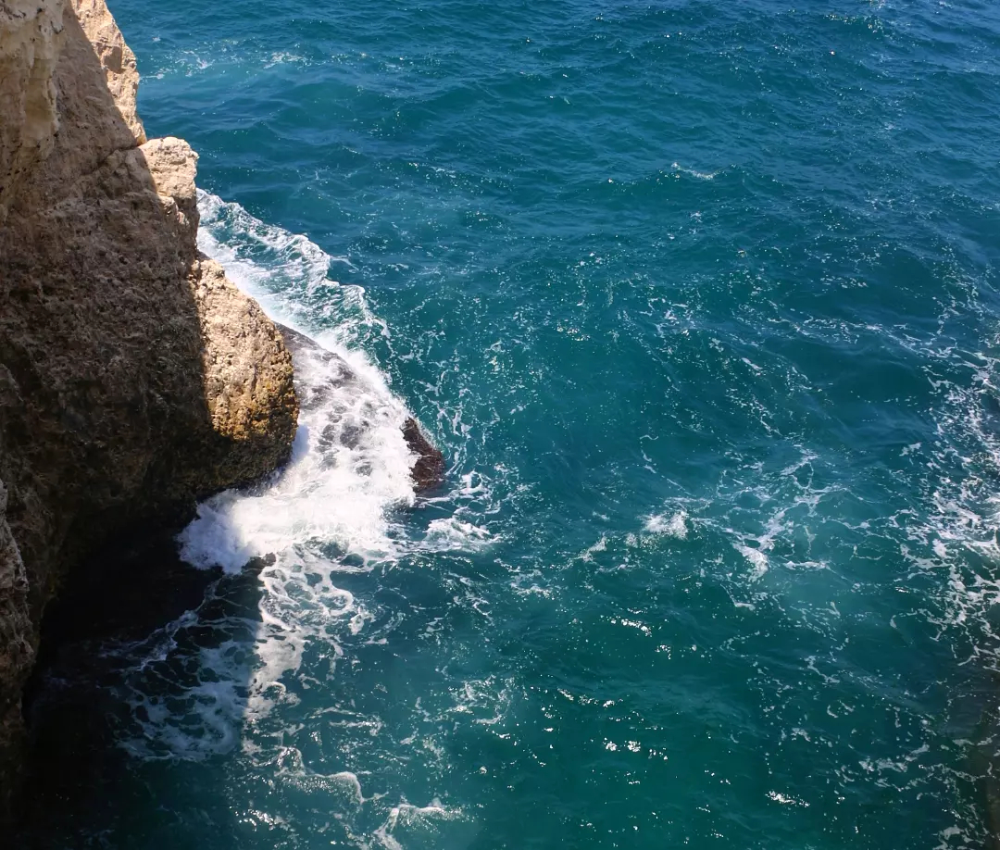

Personal shorts & Storytelling
videos
About
Personal creative work: shorts.
Featured: Freedom Is Close Yet Distant → (selected at CARLOTA International Film Festival, Vienna, and nominated for the Palestinian Voice Award in Istanbul).
Photos


